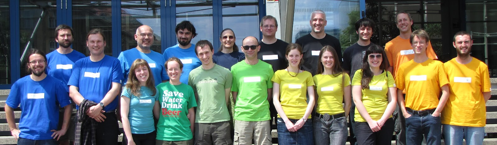
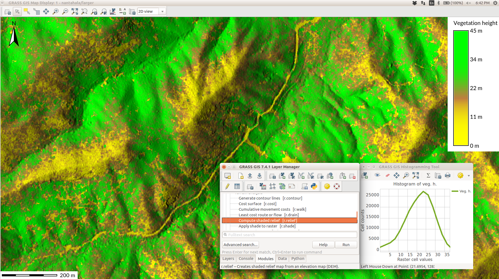
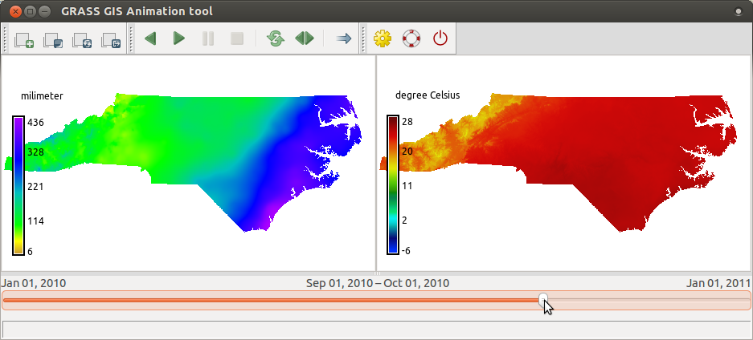
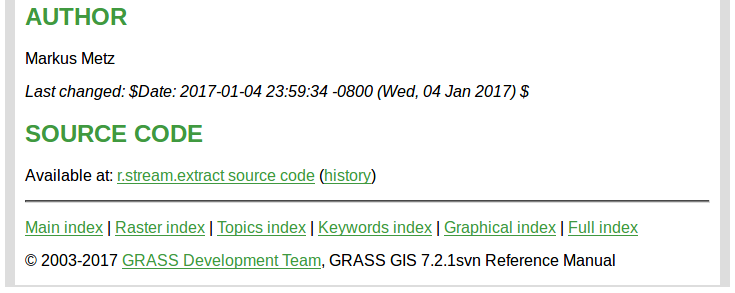
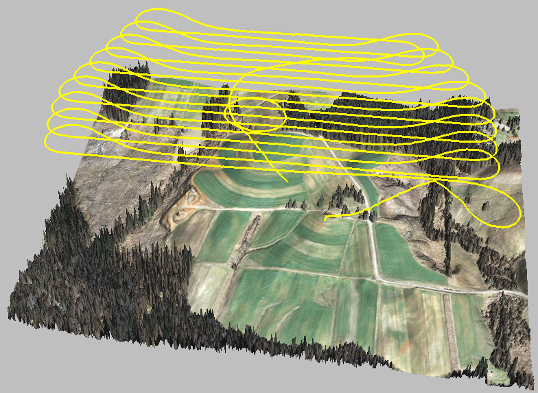
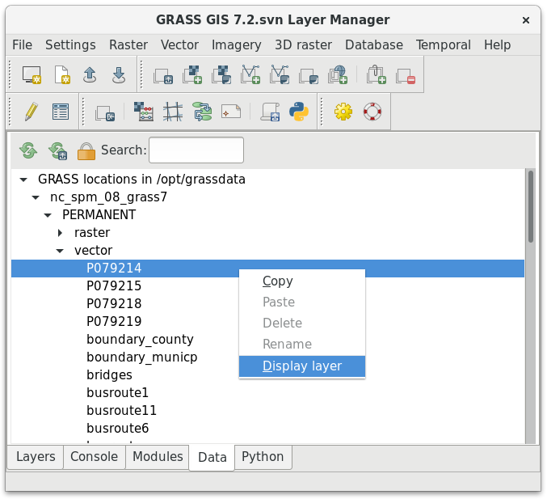
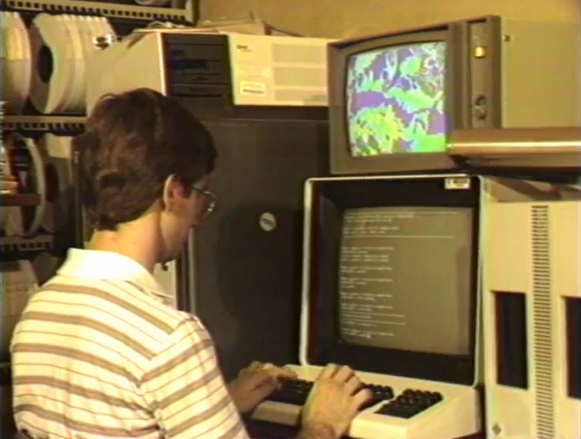
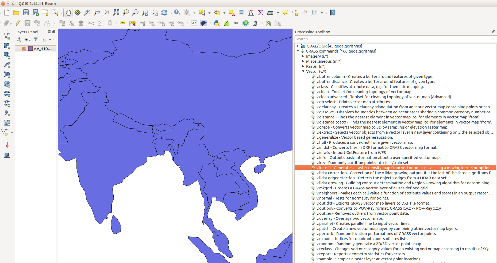

GRASS GIS
NCSU GeoForAll Lab
at the
Center for Geospatial Analytics
North Carolina State University

DOI, Open GIS Group, Apr 25, 2019
Vaclav (Vashek) Petras
- BS & MS in Geoinformatics, Czech Technical University in Prague
- PhD in Geospatial Analytics, NC State
- Postdoctoral Researcher at NC State
- GRASS GIS Development Team Member
- GRASS GIS Project Steering Committee Member
- Open Source Geospatial Foundation Charter Member

The Beginning of GRASS GIS
- 1980-1982: Ideas, predecessors and prototypes
- 1983: First reference manual published
- 1985: Geographic Resources Analysis Support System 1.0 released

Let William Shatner do the introduction
see full 15 min video at av.tib.eu/media/12963
GRASS GIS Timeline (cont.)
- 90s a general purpose GIS from a land management system
- 1999 international team of developers + GNU GPL
- 2008 OSGeo Project
- 2018 35 years of GRASS GIS development
- 2019 latest release Mar 24, 2019 (7.6.1)
- check out last change (probably just few hours ago)
GRASS GIS Now

Community shares improvements
- GRASS GIS community provides software to the public
- Shares its source code
- Includes latest additions

Scientific foundation
- references to papers associated with modules
- references to related scientific papers

Return of investment
Learn once, use forever.
- Emphasis on backwards compatibility
- No increasing license fees over time
- Employer-independent and contractor-independent

Return of investment
Code from 2002 running in 2019?
version 5.0 code works as is in 7.6:r.mapcalc depr.bin="if((elev - fill)< 0., 1, 0)"
although there is a better way to write it:
r.mapcalc "depr_bin = if((elev - fill) < 0., 1, 0)"
All-in-one
GRASS covers many fields.
- All matured tools available right away
- Download of experimental tools possible
- Hydrology, remote sensing, lidar, network analysis, …

Modules
Functionality is divided into modules (over 500)
| Prefix | Functionality | Example |
|---|---|---|
| r. | raster processing | r.mapcalc: raster map algebra |
| v. | vector processing | v.surf.rst: interpolation from points |
| g. | general management | g.remove: removes maps |
| d. | display and rendering | d.rast: display raster map |

Vector network analysis
- shortest path, traveling salesman, ...
- centrality measures, connected components, ...
- turn cost in network nodes

Cost surface calculations
Travel cost as travel time
Viewshed
Here applied in total viewshed computation by Anna Petrasova
Geomorphon
r.geomorphon - landform detection

by Jarek Jasiewicz and Tomek Stepinski
Parallelized solar radiation
r.sun - new parallelized version

by Stanislav Zubal and Michal Lacko
Vector topology cleaning
- introduced in 2002
- continuous improvements
(actual data processed and displayed in GRASS GIS)
Temporal Framework
Manage and analyze spatio-temporal datasets (time series)

by Sören Gebbert and Thomas Leppelt
(visualization tools by Anna Petrasova and Luca Delucchi)
Animation Tool
Visualize spatio-temporal datasets and other series
by Anna Petrasova
Temporal Algebra
D = if(start_date(A) < "2005-01-01", A + B)
Sum maps from A with maps with equal time stamps from B which are temporally before Jan 1, 2005

by Thomas Leppelt and Soeren Gebbert
Computational Features & Improvements
- Long established 64bit (since 2016 also on Microsoft Windows)
- Large file support even on 32bit MS Windows
- Many vector algorithms faster in version 7
- Faster and higher compression ZSTD for rasters
- Virtual raster mosaics ( r.buildvrt )
- Segment library all-in-memory mode (faster modules, easier module development)
Addons and Extensions
Skyview
Non-directional alternative to shaded relief
by Anna Petrasova
SLIC
i.superpixels.slic - image segmentation using SLIC superpixels
by Rashad Kanavath and Markus Metz
Tools for Sentinel Data
download, import, preprocessing, cloud detection, and masking of Sentinel 2 data

by Roberta Fagandini, Martin Landa, Moritz Lennert, and Roberto Marzocchi
Point clouds with PDAL
r.in.pdal - binning of points using PDAL for LAS reading

by Anika Bettge and Vaclav Petras
Point cloud transects
v.profile.points - transects of point clouds

by Vaclav Petras
Itzï
Hydrologic and hydraulic model of surface water flow

by Laurent Courty
PoPS
r.pops.spread - Pest or Pathogen Spread simulation
by NC State Center for Geospatial Analytics
FUTURES
r.futures - set of modules for urban growth modeling
by NC State Center for Geospatial Analytics
Interfaces
Command Line
The baseline interface for efficiency and reproducibility

Graphical User Interface
The interface for beginners and desktop

Simple Python Editor
Create Python scripts and modules with ease

by Vaclav Petras
Links to source code
Documentation now links to relevant parts of the source code. by Luca Delucchi
3D View
- visualization and analytical visualization
reviewing UAV fligh path
Data catalog
g.gui.datacatalog - browse, manage, and reproject raster and vector maps
by Tereza Fiedlerova and Anna Petrasova
Command line prevails: 1987
Command line prevails: 2019

HPC
- NC State University (henry2)
- University of Illinois Urbana-Champaign (Roger)
- …

Batch processing
grass7 /grassdata/nc_spm/work1 --exec \
r.viewshed input=elevation output=viewshed \
coordinates=642964,222890
by Vaclav Petras
Conclusion
Support
- Community support
- user mailing list (archived since 1991)
- GIS StackExchange
- …
- Commercial support
- Hire a GRASS GIS power user or developer
Bonus Content
Duality between GUI and commands

 Python:
Python:

Examples in the documentation and class instructions are usually provided as commands which can be used to fill in the GUI, write Python code, or run them directly.
3rd Party Interfaces
- QGIS Processing Plugin
- QGIS GRASS Plugin
- R rgrass7 package

3rd Party Interfaces
- Actinia – The GRASS GIS REST API
- Used in the OpenEO GRASS GIS driver
3rd Party Interfaces
- Tangible Landscape
- tangible user interface to GRASS GIS and Blender
- by NC State University, Center for Geospatial Analytics
Modules running: v.surf.rst, r.contour, r.fill.dir, r.sim.water
APIs
- native:
- C (usable in C++)
- Python
- command line (Bash, cmd, …)
- 3rd party:
- R (rgrass7 package)
- Ruby (grassgis gem)
- Java (JGrasstools library)
- as backend:
- QGIS Processing (Python and R APIs)
- PyWPS, ZOO-Project (OGC WPS)
- Actinia (REST)
- gvSIG JGrasstools Spatial Toolbox under development
GRASS GIS in the FOSS Ecosystem
- GRASS GIS
- Geospatial processing, algorithms, and workflows
- Inkscape, Gimp, ImageMagic, GMT, QGIS
- Graphics and refined the cartography
- PostgreSQL with PostGIS
- Relational database (spatial and non-spatial data storage)
- R, Octave, Python, Jupyter, LibreOffice
- Statistics, non-spatial data analysis
- OpenLayers, Leaflet, GeoExt, Django, Flask
- Web interface
- PyWPS, ZOO-Project, Actinia
- Processing server
- MapServer, GeoServer, QGIS Server
- spatial data publishing server
Concepts
- locations and mapsets
- data management
- projections
- computational region
Spatial Database

Selecting Mapset
- Selecting database, location, and mapset

Import, export, linking
- Data need to be imported or linked (GDAL)
- Vector and raster data can be linked
- r.external, r.external.out
- v.external, v.external.out
- Export to various formats (or linking)
- GRASS GIS native exchange format (v.pack, r.pack, v.unpack, …)
Computational Region
- extent and resolution for raster computations

Resources
- Documentation:
- Tutorials:
-
Books:
- Open Source GIS: A GRASS GIS Approach
- Tangible Modeling with Open Source GIS
- GIS-based Analysis of Coastal Lidar Time-Series
- Open Source Approaches to Spatial Data Handling